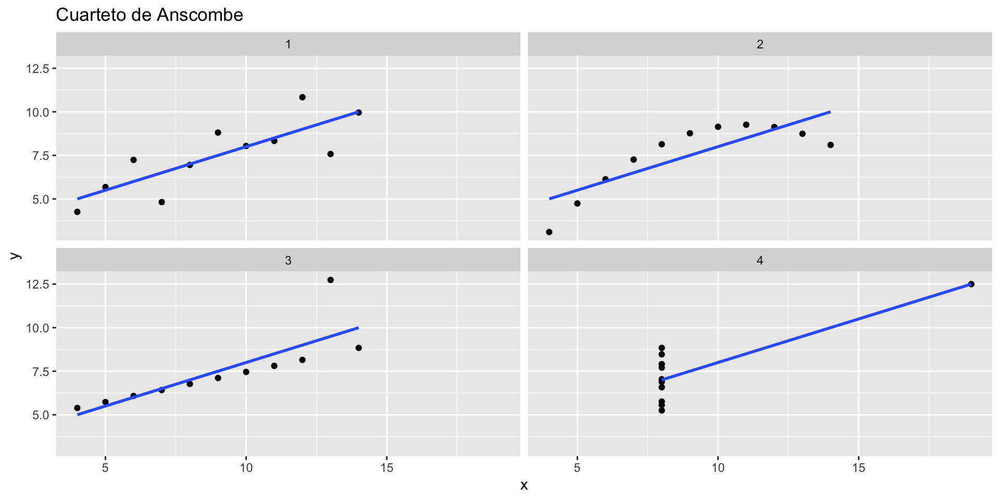

Clase 04
Estadística Descriptiva desde 0 en R
Sara Acevedo
Bienvenidos a la clase 04!
Qué vimos la clase anterior?
- Aclaramos como trabajar en proyectos y directorios
- Como encontrar que función necesito
- Pruebas de hipótesis (t.test y normalidad)
- Comparar grupos
- Formato de datos (long y wide)
- Inicio de ggplot2
Qué aprenderemos en esta clase 💻
- Regresion lineal
- Automatizacion de regresión
- Continuación de ggplot
- Uso del paquete broom
Código y materiales
El repositorio lo puedes encontrar acá:
Regresión lineal (simple)
La regresión lineal simple se utiliza para predecir cuantitativamente un resultado a partir de una única variable de predicción x. El objetivo es construir un modelo matemático (o fórmula) que defina y como una función de la variable x.

La fórmula matemática de la regresión lineal es y = b0 + b1*x + e:
b0es el intercepto (valor predicho x = 0)b1es la pendiente de la regresión.ees el término de error- Figura de STDHA
Algunos de los puntos están por encima y otros por debajo de la curva. Para usar regresion lineal asumiremos tres cosas
- Linealidad (entre x e y)
- Homoscedasticidad (distancia de la linea constante)
- Normalidad de los residuos
La variación media de los puntos en torno a la línea de regresión ajustada se denomina error estándar residual (RSE).
Cuanto menor sea el RSE, mejor será.
Evaluemos homoscedasticidad, linealidad y residuos
La funcion de R para regresión lineal es lm()
Rows: 31
Columns: 3
$ Girth <dbl> 8.3, 8.6, 8.8, 10.5, 10.7, 10.8, 11.0, 11.0, 11.1, 11.2, 11.3, …
$ Height <dbl> 70, 65, 63, 72, 81, 83, 66, 75, 80, 75, 79, 76, 76, 69, 75, 74,…
$ Volume <dbl> 10.3, 10.3, 10.2, 16.4, 18.8, 19.7, 15.6, 18.2, 22.6, 19.9, 24.…- Girth : circunferencia
- Height: altura
- Volume: volumen
Nos preguntamos si podemos predecir la altura a partir de la circunferencia, la circunferencia es la variable independiente x y la altura es la variable dependiente y.
circunferencia altura volumen
1 8.3 70 10.3
2 8.6 65 10.3
3 8.8 63 10.2
4 10.5 72 16.4
5 10.7 81 18.8
6 10.8 83 19.7
7 11.0 66 15.6
8 11.0 75 18.2
9 11.1 80 22.6
10 11.2 75 19.9
11 11.3 79 24.2
12 11.4 76 21.0
13 11.4 76 21.4
14 11.7 69 21.3
15 12.0 75 19.1
16 12.9 74 22.2
17 12.9 85 33.8
18 13.3 86 27.4
19 13.7 71 25.7
20 13.8 64 24.9
21 14.0 78 34.5
22 14.2 80 31.7
23 14.5 74 36.3
24 16.0 72 38.3
25 16.3 77 42.6
26 17.3 81 55.4
27 17.5 82 55.7
28 17.9 80 58.3
29 18.0 80 51.5
30 18.0 80 51.0
31 20.6 87 77.0Un buen glimpse para regresión es ggplot + geom_point
Sumemos geom_smooth()
Vamos a crear el modelo con la función lm()
lm(dependiente_var ~ independendiente_var, data = dataset)
Call:
lm(formula = altura ~ circunferencia, data = arboles)
Coefficients:
(Intercept) circunferencia
62.031 1.054 Por cada pulgada que aumente la circunferencia, su altura aumentará 1.054 pulgadas.
Revisemos el modelo
# A tibble: 2 × 5
term estimate std.error statistic p.value
<chr> <dbl> <dbl> <dbl> <dbl>
1 (Intercept) 62.0 4.38 14.2 1.49e-14
2 circunferencia 1.05 0.322 3.27 2.76e- 3# A tibble: 1 × 12
r.squ…¹ adj.r…² sigma stati…³ p.value df logLik AIC BIC devia…⁴ df.re…⁵
<dbl> <dbl> <dbl> <dbl> <dbl> <dbl> <dbl> <dbl> <dbl> <dbl> <int>
1 0.270 0.244 5.54 10.7 0.00276 1 -96.0 198. 202. 890. 29
# … with 1 more variable: nobs <int>, and abbreviated variable names
# ¹r.squared, ²adj.r.squared, ³statistic, ⁴deviance, ⁵df.residual
# ℹ Use `colnames()` to see all variable namesUsamos funciones de rbase para evaluar residuos
Usaremos el paquete broom para extraer info de los modelos
1 2 3 4 5 6
-0.7825750 -6.0988856 -8.3097594 -1.1021864 7.6869399 9.5815030
7 8 9 10 11 12
-7.6293708 1.3706292 6.2651923 1.1597555 5.0543186 1.9488817
13 14 15 16 17 18
1.9488817 -5.3674289 0.3162604 -1.6326715 9.3673285 9.9455810
19 20 21 22 23 24
-5.4761666 -12.5816034 1.2075228 2.9966490 -3.3196616 -6.9012148
25 26 27 28 29 30
-2.2175255 0.7281057 1.5172320 -0.9045156 -1.0099524 -1.0099524
31
3.2486887 Como automatizar lm() y hacer varios modelos
Vector:
map()aplicará la función cada elemento del vectorLista:
map()aplicará la función a cada elemento de la listadataframe:
map()aplicará la función a cada columna del dataframe
función base de purrr: map()

Veamos map() + vector
[[1]]
[1] 10
[[2]]
[1] 20
[[3]]
[1] 30
[[4]]
[1] 40
[[5]]
[1] 50
[[6]]
[1] 60
[[7]]
[1] 70
[[8]]
[1] 80
[[9]]
[1] 90
[[10]]
[1] 100Material extra: Introducción a la programación funcional con purrr
Veamos map_dbl() + vector
Veamos map() + lista
función base de purrr: map2()
map2()toma como input una función y la aplica a cada par de elementos (dos vectores o dos listas)
Ahora nos damos un break
Ahora abrimos RStudio
Qué aprendimos en esta clase 💻
- Regresion lineal
- Automatizacion de regresión
- Continuación de ggplot
- Uso del paquete broom